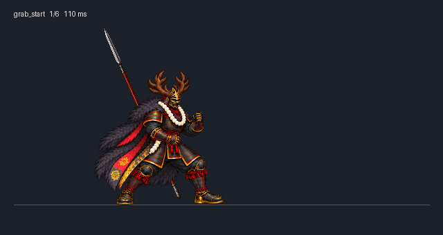
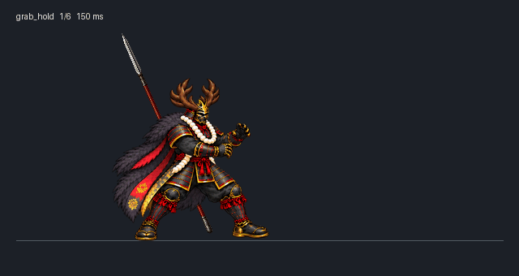
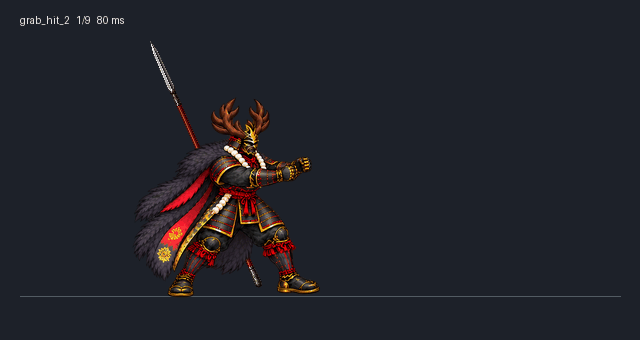
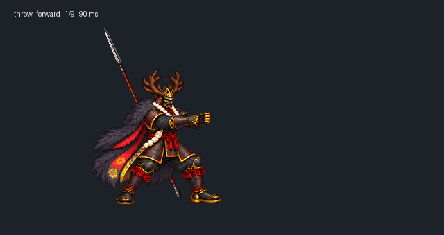
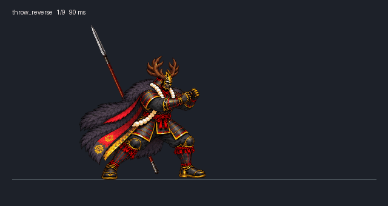

grab_start: normal / 3× slower


grab_hold: normal / 3× slower

grab_hit_1: normal / 3× slower
grab_hit_2: normal / 3× slower


throw_forward: normal / 3× slower

throw_reverse: normal / 3× slower
